RSAS / Insights
Insights
Notes on the contemporary art market, written for collectors and clients rather than the trade.
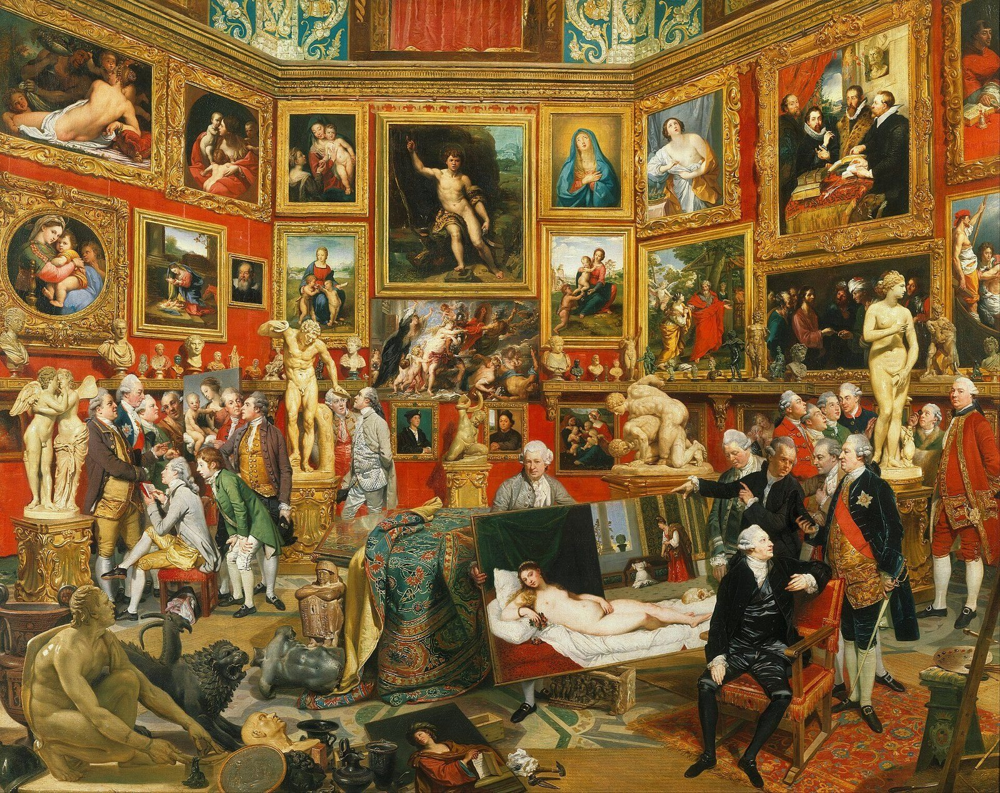
Short, practical pieces on how the market works and what is moving within it. Some draw on our own research. Others explain the mechanics most buyers are never shown.
Articles
01
7 minute read02
7 minute read03
7 minute read04
7 minute read05
7 minute read06
7 minute read07
7 minute read08
7 minute read09
7 minute read10
7 minute read11
5 minute read12
4 minute read13
4 minute read14
4 minute read15
4 minute read16
4 minute read17
4 minute read18
4 minute read19
4 minute read20
4 minute read
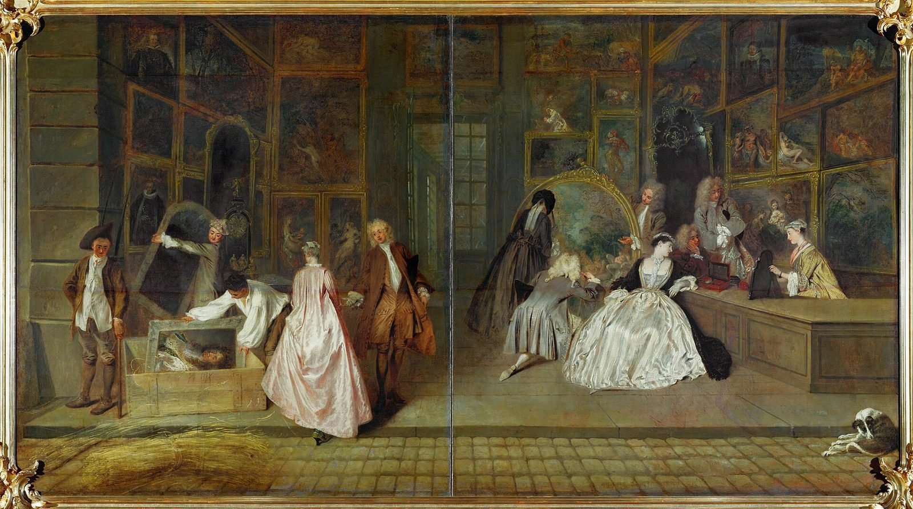
7 minute read02
7 minute read03
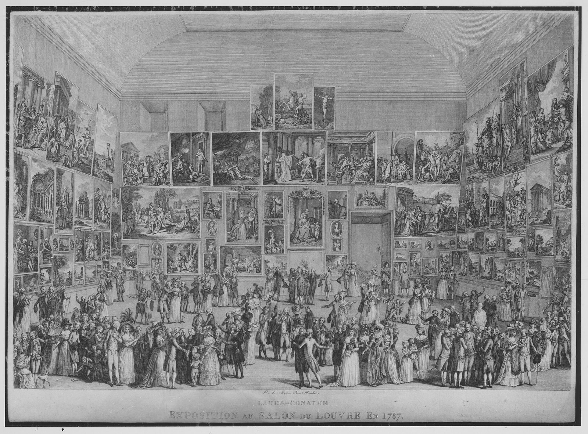
7 minute read04
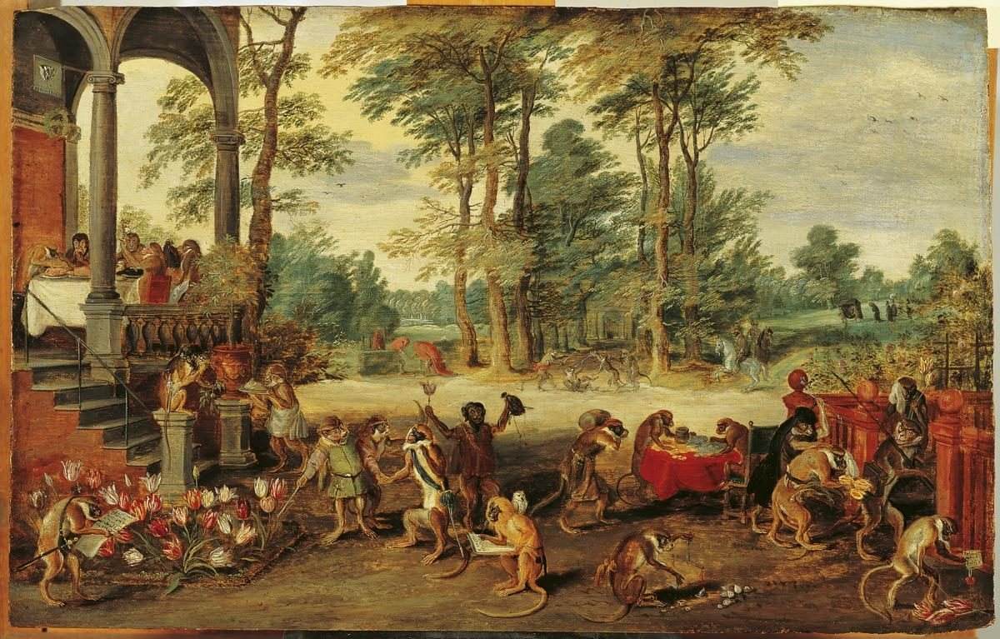
7 minute read05
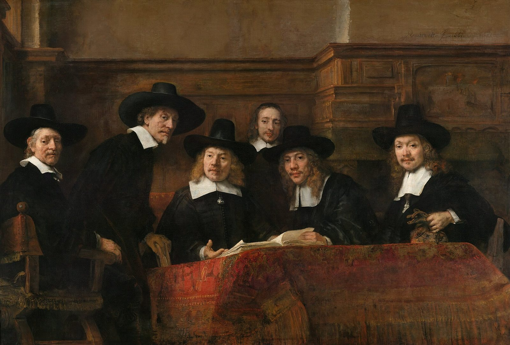
7 minute read06

7 minute read07
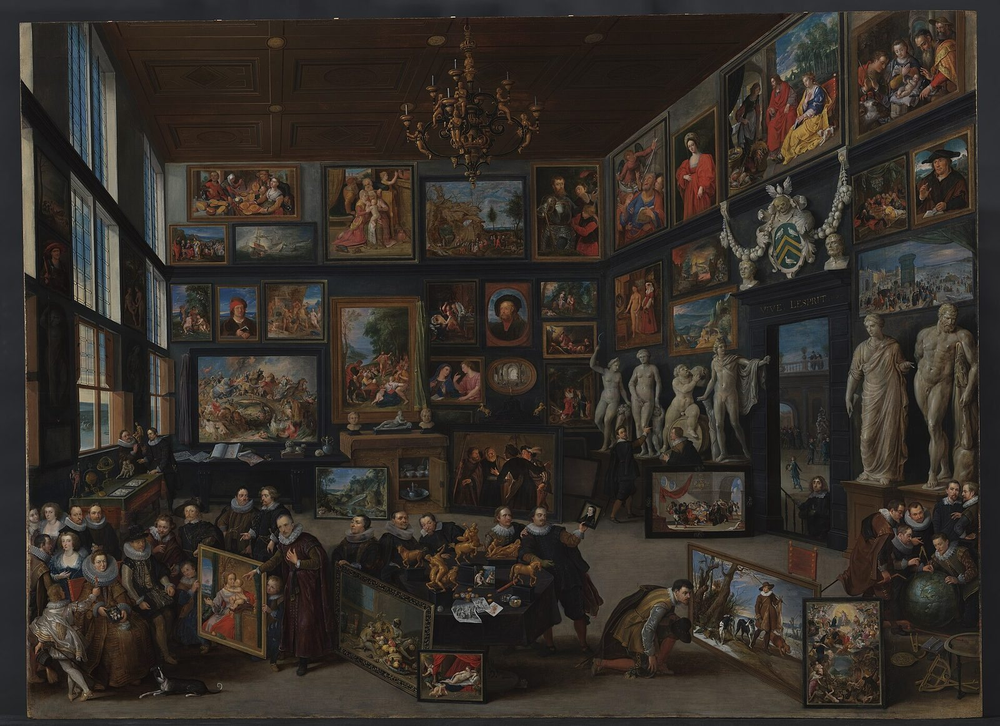
7 minute read08

7 minute read09
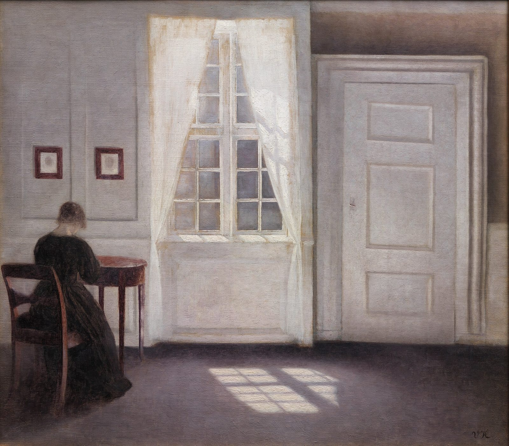
7 minute read10
7 minute read11
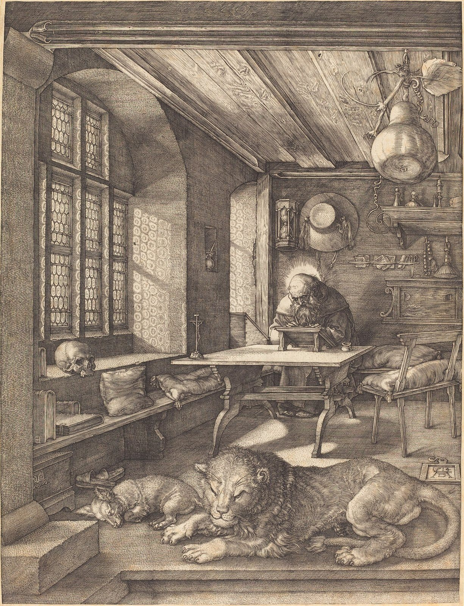
5 minute read12
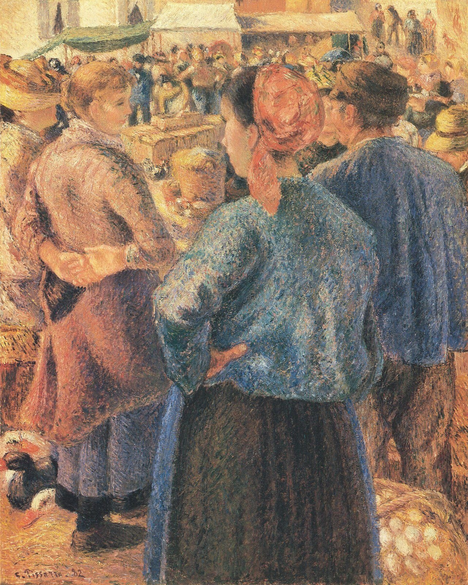
4 minute read13
4 minute read14

4 minute read15
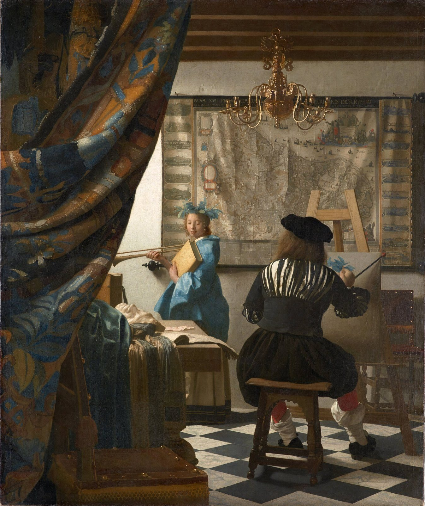
4 minute read16
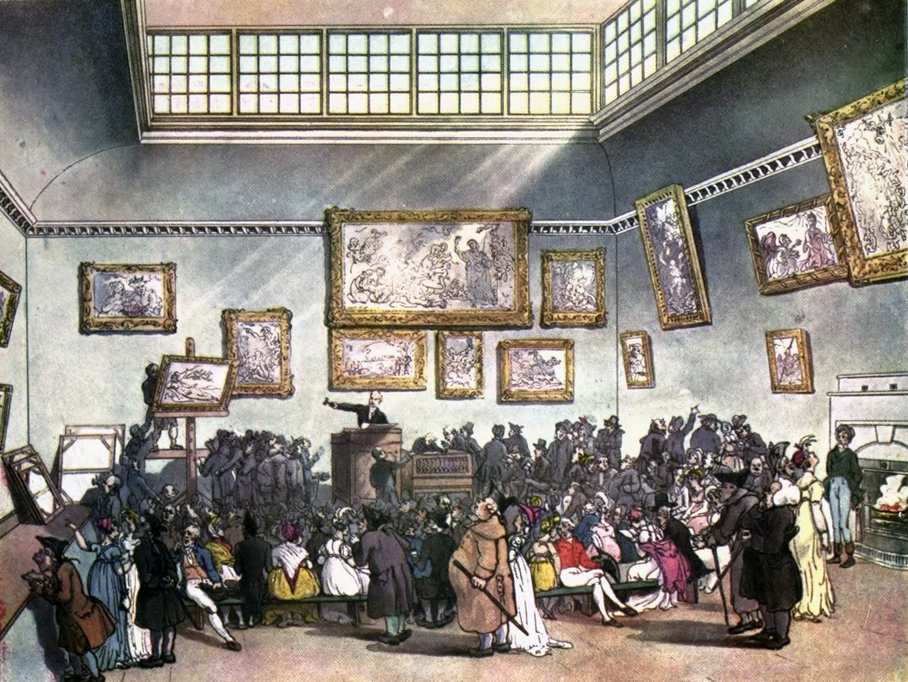
4 minute read17
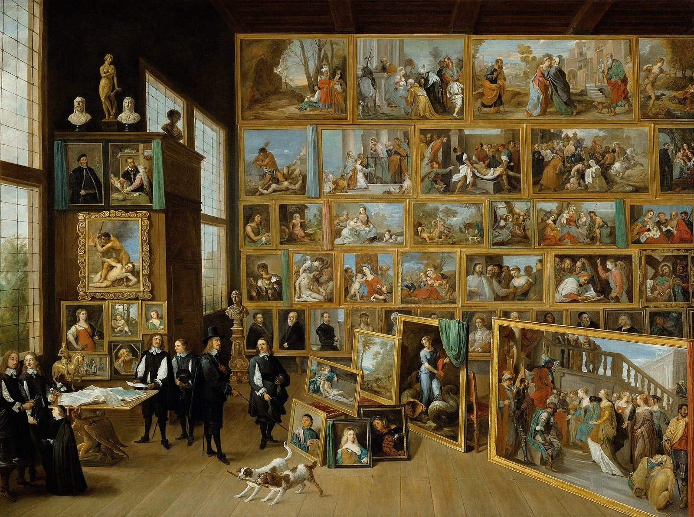
4 minute read18

4 minute read19

4 minute read20

4 minute read
Newsletter Sign-up
New Insights and occasional market notes by email, no more than once a month.